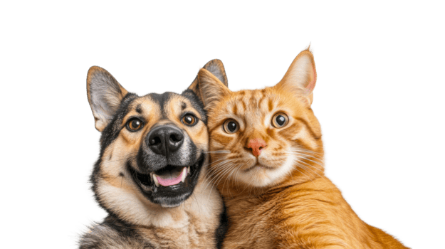
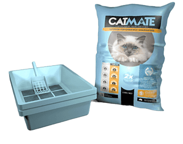
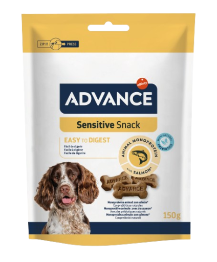

Adopción responsable
Conoce mascotas que buscan un nuevo hogar
Explora publicaciones disponibles, revisa información básica de cada mascota y simula una solicitud de adopción de manera clara y organizada.
Disponibles
Mascotas en proceso de adopción
Una vista pensada para que el usuario identifique opciones y solicite información fácilmente.

Perro
Toby
Perro criollo cariñoso, ideal para familia y convivencia en hogar.

Gato
Max
Gato tranquilo, adaptable y recomendado para espacios interiores.

Perro
Luna
Perra sociable y enérgica, ideal para hogares con rutinas activas.
Solicitudes recientes
Una vista simple del seguimiento de solicitudes generadas.
Proceso visible
La interfaz permite representar el flujo entre publicación y solicitud.
Selección clara
El usuario identifica fácilmente qué mascota le interesa y cómo solicitarla.
Estado organizado
La solicitud queda reflejada en pantalla de forma simple y entendible.